How raylib works: your 3D maths, done by the graphics card
For eleven lessons you have drawn 3D with your own Python: turn every corner, divide by z, sort the faces, fill the polygons. raylib does the very same jobs, but it hands them to the graphics card, which has thousands of small workers that do them all at once. This lesson takes the ideas you already know one at a time and shows what each one is called in raylib, where it went, and why that is so much faster. It is also how FrogWorld's new --gpu mode works.
Before: Lessons 1 to 11 built a whole 3D engine in Python: projection (1), turning (2), solid faces and the clock test (3), light (3B), the camera (4), matrices (6), clipping (8) and the depth buffer (10). FrogWorld grew from the same ideas.
Today: the same pipeline, run by the graphics card through raylib (the Python module is called pyray). Four small programs, each one checked against your own Lesson 1 numbers.
Next: FrogWorld's frogworld.py --gpu, which uses every idea in this lesson (Part 7 shows where).
You need one install, once: py -m pip install raylib. raylib 6.2.0.0 has a ready-made Windows wheel for Python 3.14, so nothing is compiled.
Lesson plan
| Time | Part | You will |
|---|---|---|
| 8 min | 1. CPU vs GPU | see who does the work in your renderer and in raylib, and why many small workers win |
| 8 min | 2. Window and loop | run step1_window.py, line by line against pygame |
| 14 min | 3. Camera3D | meet the mirror, the camera's four numbers and fovy; prove corner 5 lands on SCREEN (500, 200) |
| 6 min | 4. Drawing shapes | use draw_cube and friends, and see why they look flat |
| 8 min | 5. Depth buffer for free | follow one pixel through the card's depth test; switch it off with step3_depth_buffer.py |
| 10 min | 6. Meshes | build triangles, get their front the right way round, send them to the card once |
| 6 min | 7. Draw calls and speed | draw 1,600 cubes three ways with step4_draw_calls.py, then see FrogWorld's version |
Part 1: Who does the work? 8 MIN
Every 3D picture, yours or raylib's, needs the same jobs done every frame: turn each corner round the camera, project it (divide by z), throw away what can't be seen, put the faces in order, and fill in the pixels. The only question is who does them.
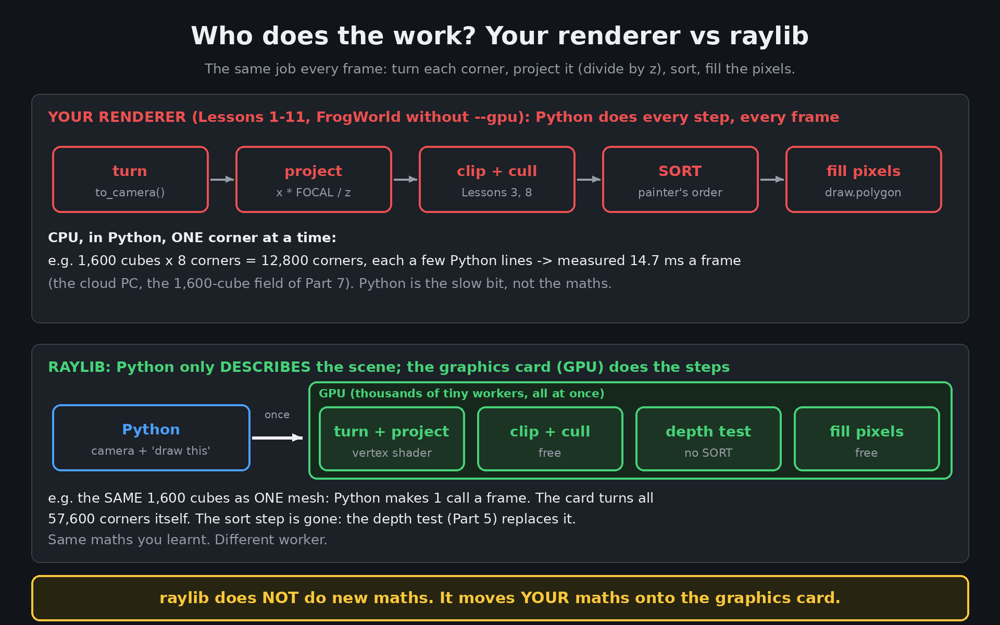
In your renderer every step is Python, and Python works on one corner at a time. Each line of Python costs a little, and a world has tens of thousands of corners. In raylib, Python only describes what to draw. The graphics card (the GPU, "graphics processing unit") does all the steps with its own chips.
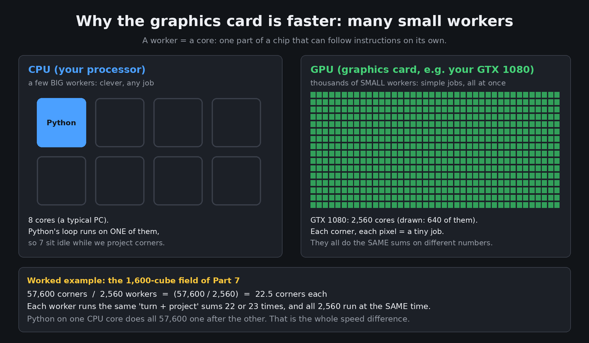
A GPU core can't do much: it follows the same short list of sums as all its neighbours, each on different numbers. But that is exactly what 3D needs. "Turn and project this corner" is the same sum for every corner. So the card gives each worker a few corners, and they all finish at about the same moment.
raylib does no new maths. It moves YOUR maths onto the graphics card.
Everything below is a lesson you already know, with a new name. When something looks strange, ask: which of my old steps is this?
Q1A scene has 3,000 boxes, each with 8 corners. How many corners does each of the GTX 1080's 2,560 workers turn, if the card shares them out evenly?
Show answer
Corners: (3,000 * 8) = 24,000. Each worker: (24,000 / 2,560) = 9.375, so 9 or 10 corners each, all at the same time. In Python, one core would do all 24,000 one after the other.
Part 2: A window and a loop 8 MIN
raylib is written in C. pyray is the bridge that lets Python call it, with Python-style names.
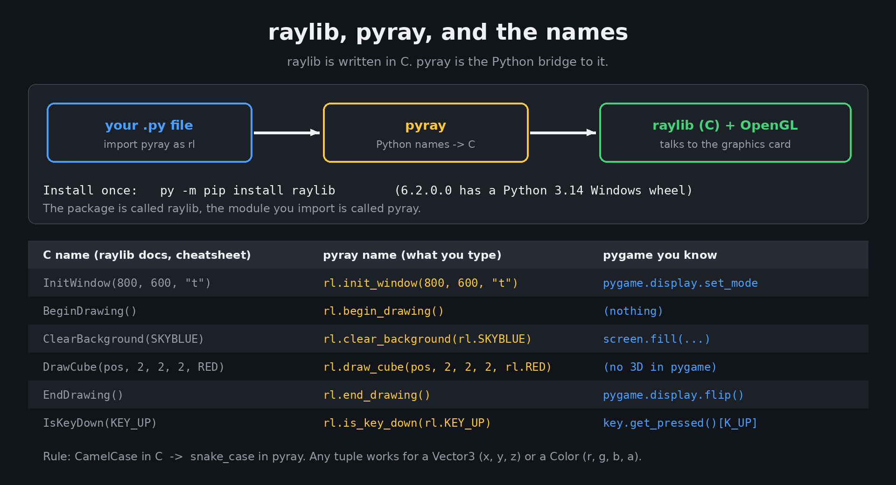
InitWindow is rl.init_window.Here is the whole first program, next to the pygame program you would have written for the same picture:
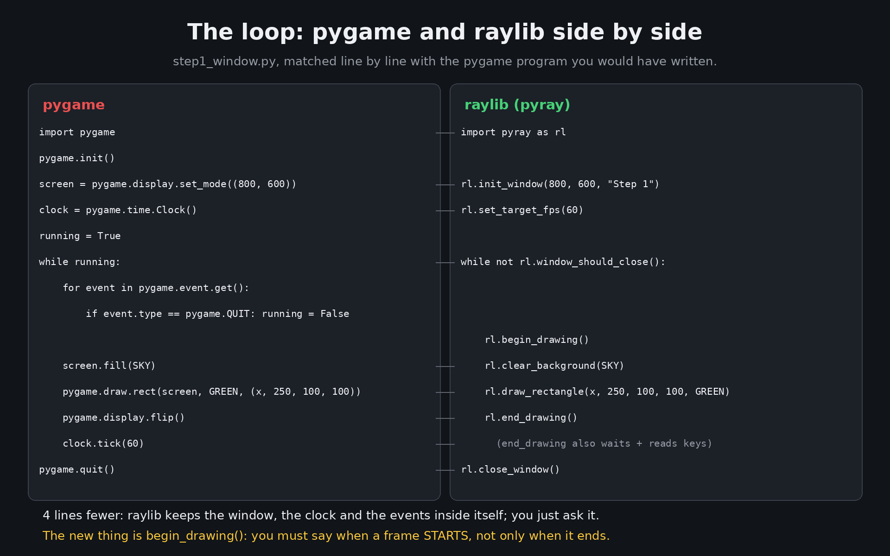
step1_window.py (right) and its pygame twin (left). Blank cells: raylib does that job for you.rl.init_window(WIDTH, HEIGHT, "Step 1 - a raylib window")
rl.set_target_fps(60) # = clock.tick(60), said once
while not rl.window_should_close(): # Esc or the close button
x = (x + 2) # 2 px a frame = (2 * 60) = 120 px a second
rl.begin_drawing() # NEW: say when a frame starts
rl.clear_background(SKY) # = screen.fill(SKY)
rl.draw_rectangle(x, 250, 100, 100, FROG_GREEN) # SCREEN pixels, as in pygame
rl.end_drawing() # = pygame.display.flip()
rl.close_window()Two things are new. Colours have a fourth number, alpha (how solid: 255 = solid). And you must say begin_drawing() before you draw. The reason is in the next picture: the card keeps two hidden pictures, and needs to know when you start on the next one.
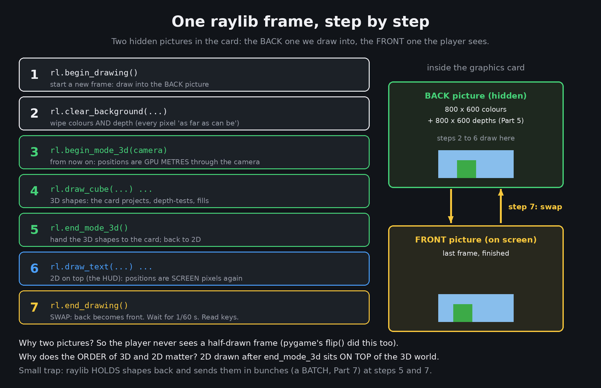
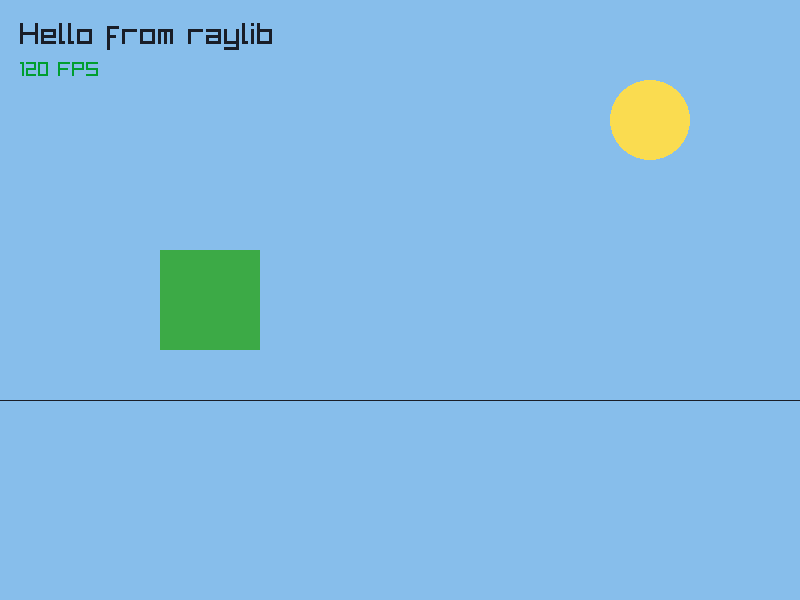
step1_window.py running. SCREEN coordinates, exactly as in pygame: (0, 0) top-left, y down.Q2In step1_window.py, what goes wrong if you move rl.clear_background(SKY) to just AFTER rl.draw_rectangle(...)?
Show answer
The sky colour is painted over every pixel after the square is drawn, so the square is wiped out in every frame. You only ever see sky. Order inside a frame matters exactly as it did with screen.fill.
Q3Why is it fine that raylib's end_drawing() both swaps the pictures AND waits for the 60 FPS beat?
Show answer
Both jobs belong at the end of a frame. pygame did them in two calls (flip() then clock.tick(60)); raylib does them in one. With set_target_fps(0) it does not wait at all, which is what we want when we measure speed in Part 7.
Part 3: Camera3D, and the mirror 14 MIN
Now the 3D part. Before we can hand raylib a single corner we have to settle one difference between our coordinates and its own.
The mirror
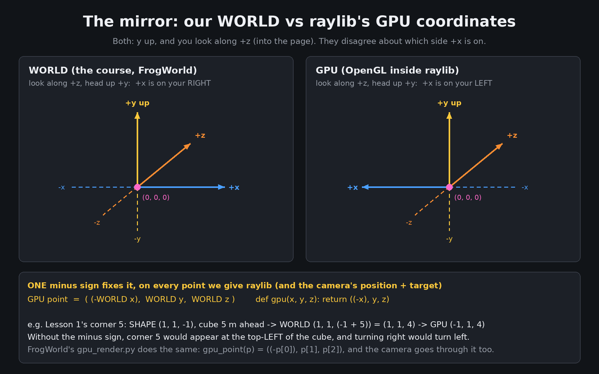
Look along +z with your head along +y. In our WORLD, +x is on your right. In OpenGL, +x is on your left: it is the mirror image. Neither is wrong; they are two different habits. One minus sign on x converts every point, and every program in this lesson starts with it:
def gpu(x, y, z):
"""WORLD (x, y, z) -> GPU (-x, y, z)."""
return ((-x), y, z)
# e.g. corner 5: SHAPE (1, 1, -1), slid 5 m away -> WORLD (1, 1, 4) -> GPU (-1, 1, 4)FrogWorld's gpu_render.gpu_point is the same function. Without it, corner 5 would appear at the top-left of the cube, and turning right would turn the picture left.
The camera's four numbers
Your renderer stored the camera as x, y, z, yaw and pitch, and turned the whole world round it (Lessons 4 and 6). raylib asks for the camera in a different way: where the eye is, and any point it is looking at.
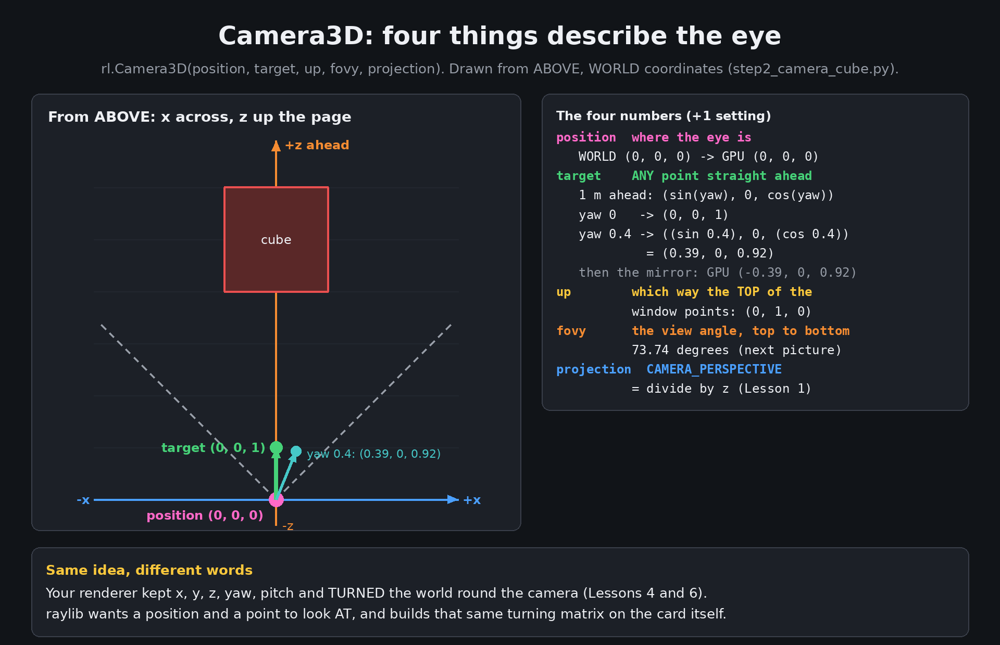
target can be any point straight ahead; 1 m ahead is the simplest.eye = gpu(0, 0, 0) # position: WORLD (0, 0, 0)
look_at = gpu(math.sin(yaw), 0, math.cos(yaw)) # target: 1 m ahead, facing = (sin(yaw), cos(yaw))
camera = rl.Camera3D(eye, look_at, (0, 1, 0), fovy, rl.CAMERA_PERSPECTIVE)up = (0, 1, 0) says the top of the window shows +y. CAMERA_PERSPECTIVE means "divide by z", Lesson 1's rule that far things are smaller. That leaves fovy.
fovy: raylib's zoom
raylib has no FOCAL. Instead it wants the view angle from the top edge of the window to the bottom edge, in degrees: "field of view, y". We can work out the fovy that matches FOCAL 400 exactly.
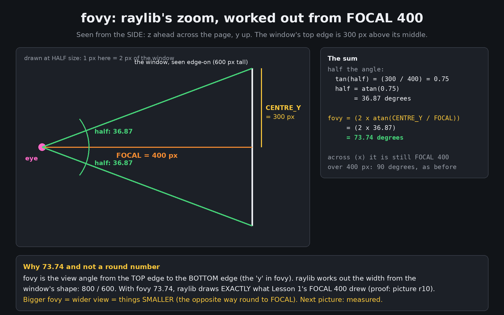
fovy = (2 * atan(CENTRE_Y / FOCAL))
= (2 * atan(300 / 400)) = 73.74 degreesWith this one number raylib draws exactly the picture Lesson 1's FOCAL 400 drew. FrogWorld works it out the same way for any window size.
Bigger fovy means a wider view, so each thing takes up fewer pixels: the opposite way round to FOCAL. Here it is measured, not guessed:
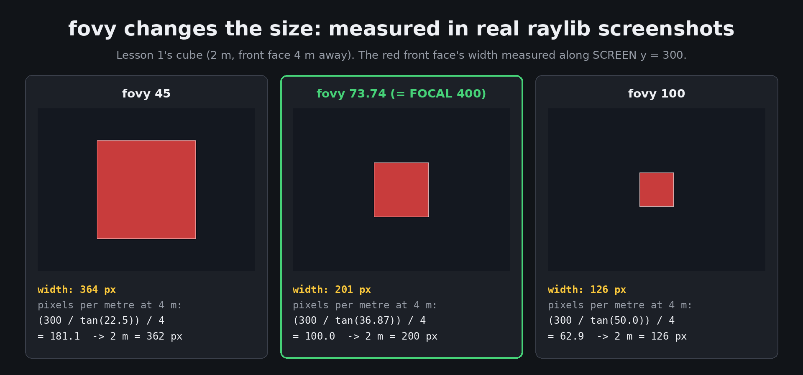
The proof: corner 5
step2_camera_cube.py draws Lesson 1's cube with raylib, then works out corner 5 both ways: with our own Lesson 1 formula (a white cross) and with raylib's own get_world_to_screen (a yellow ball and a yellow number).
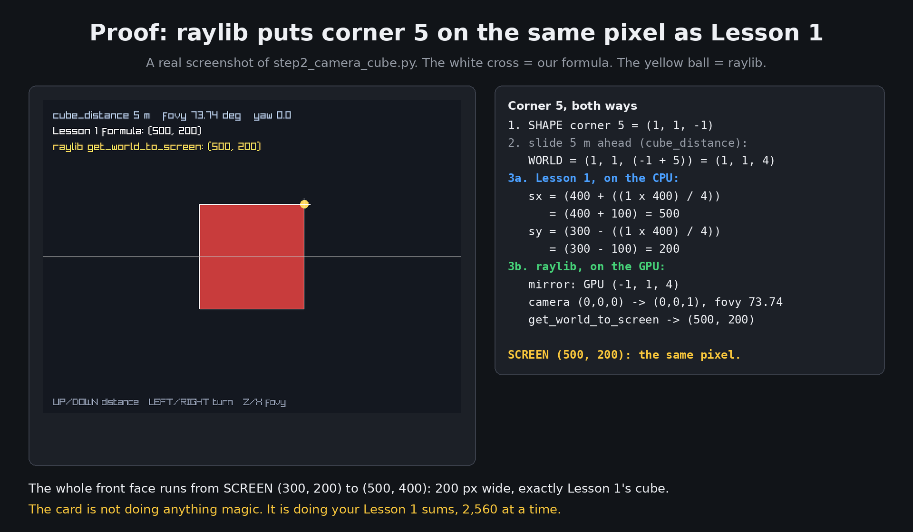
Show the whole of step2_camera_cube.py (153 lines)
# =====================================================================================
# step2_camera_cube.py - raylib lesson, Parts 3 and 4: Camera3D and Lesson 1's cube, drawn by the GPU
# =====================================================================================
#
# WHAT THIS SHOWS
# Lesson 1's cube (2 m wide, centre 5 m ahead), but this time we never call project() ourselves.
# We describe a CAMERA to raylib once per frame, say "draw a cube here", and the graphics card does the
# turning, projecting and filling of every corner.
# To PROVE it is the same maths as Lesson 1, corner 5 is worked out BOTH ways:
# * by our own Lesson 1 formula (a white cross on the screen)
# * by raylib's own projection (a yellow ball in 3D, and rl.get_world_to_screen)
# They land on the same pixel: SCREEN (500, 200) at the start.
#
# KEYS
# UP / DOWN cube further / nearer (cube_distance, as in Lesson 1)
# LEFT / RIGHT turn the camera left / right (yaw)
# Z / X narrower / wider view (fovy, raylib's version of FOCAL; Part 3)
# Esc quit
#
# THE COORDINATE SYSTEMS in this file (picture images/r06_mirror.png):
# SHAPE metres from the cube's own centre: cube_points, corner 5 = (1, 1, -1)
# WORLD metres from the viewer at (0, 0, 0): the COURSE's system. x right, y up, z AHEAD (into the screen).
# GPU what raylib is given: (-WORLD x, WORLD y, WORLD z). One minus sign: THE MIRROR (function gpu below)
# SCREEN pixels from the window's top-left, y DOWN.
import math
import pyray as rl
WIDTH = 800
HEIGHT = 600
CENTRE_X = (WIDTH / 2) # 400: SCREEN x of the middle of the window
CENTRE_Y = (HEIGHT / 2) # 300: SCREEN y of the middle
FOCAL = 400 # Lesson 1's zoom: half the window's width -> a 90 degree view across
# -------------------------------------------------------------------------------------
# 1. THE MIRROR: WORLD -> GPU (picture images/r06_mirror.png)
# -------------------------------------------------------------------------------------
# The course (and FrogWorld) use x RIGHT, y UP, z AHEAD.
# OpenGL, inside raylib, is the mirror image: stand at (0, 0, 0) looking along +z with +y up, and +x is
# on your LEFT. If we gave raylib our numbers as they are, every picture would come out flipped left for
# right (corner 5 would appear top-LEFT).
# The fix is one minus sign on x for every point we hand over. FrogWorld's gpu_render.gpu_point does the same.
# e.g. corner 5 in WORLD (1, 1, 4) -> GPU (-1, 1, 4)
def gpu(x, y, z):
"""WORLD (x, y, z) -> GPU (-x, y, z)."""
return ((-x), y, z)
# -------------------------------------------------------------------------------------
# 2. LESSON 1's PROJECTION, kept only to CHECK raylib's answer
# -------------------------------------------------------------------------------------
def project(x, y, z):
"""WORLD (camera at (0, 0, 0) looking along +z) -> SCREEN pixels. Lesson 1, unchanged.
e.g. corner 5 WORLD (1, 1, 4): sx = (400 + ((1 x 400) / 4)) = (400 + 100) = 500
sy = (300 - ((1 x 400) / 4)) = (300 - 100) = 200"""
sx = (CENTRE_X + ((x * FOCAL) / z))
sy = (CENTRE_Y - ((y * FOCAL) / z))
return (sx, sy)
# -------------------------------------------------------------------------------------
# 3. fovy: raylib's zoom (picture images/r08_fovy.png)
# -------------------------------------------------------------------------------------
# raylib does not use FOCAL. It wants the camera's view angle from the TOP edge of the window to the BOTTOM
# edge, in DEGREES: "field of view, y" = fovy.
# The top edge is CENTRE_Y = 300 pixels above the middle, at FOCAL = 400 pixels "in front of the eye", so
# half the angle is atan(300 / 400):
# fovy = (2 x atan(CENTRE_Y / FOCAL)) = (2 x atan(300 / 400)) = (2 x 36.87) = 73.74 degrees
# With this fovy raylib draws EXACTLY the picture Lesson 1's FOCAL 400 drew.
def fovy_from_focal(focal):
return math.degrees((2 * math.atan((CENTRE_Y / focal))))
fovy = fovy_from_focal(FOCAL) # 73.74 degrees
cube_distance = 5 # metres: WORLD z of the cube's centre (Lesson 1's number)
yaw = 0.0 # radians: + turns the camera RIGHT (the course's rule)
# The cube's 8 corners, SHAPE coordinates (metres from its centre), numbered as in Lesson 1
cube_points = [
(-1, -1, -1), (1, -1, -1), (1, -1, 1), (-1, -1, 1), # 0 1 2 3: the bottom four
(-1, 1, -1), (1, 1, -1), (1, 1, 1), (-1, 1, 1), # 4 5 6 7: the top four
]
rl.init_window(WIDTH, HEIGHT, "Step 2 - Camera3D and Lesson 1's cube")
rl.set_target_fps(60)
while not rl.window_should_close():
# --- keys (rl.is_key_down = "held this frame", like pygame.key.get_pressed()) ---
if rl.is_key_down(rl.KEY_UP):
cube_distance = (cube_distance + 0.05)
if rl.is_key_down(rl.KEY_DOWN):
cube_distance = max(2.0, (cube_distance - 0.05))
if rl.is_key_down(rl.KEY_RIGHT):
yaw = (yaw + 0.02)
if rl.is_key_down(rl.KEY_LEFT):
yaw = (yaw - 0.02)
if rl.is_key_down(rl.KEY_Z):
fovy = max(20.0, (fovy - 0.5))
if rl.is_key_down(rl.KEY_X):
fovy = min(120.0, (fovy + 0.5))
# --- THE CAMERA (picture images/r07_camera3d.png) ---
# position where the eye is WORLD (0, 0, 0) -> GPU (0, 0, 0)
# target ANY point straight ahead of it WORLD 1 m ahead along the facing direction
# facing = (sin(yaw), 0, cos(yaw)) (the course's rule); at yaw 0 that is (0, 0, 1)
# up which way is "up" for the eye (0, 1, 0): the top of the window shows +y
# fovy the view angle top-to-bottom 73.74 degrees (= FOCAL 400)
# CAMERA_PERSPECTIVE: far things smaller (divide by z). CAMERA_ORTHOGRAPHIC would not divide.
eye = gpu(0, 0, 0)
look_at = gpu(math.sin(yaw), 0, math.cos(yaw))
camera = rl.Camera3D(eye, look_at, (0, 1, 0), fovy, rl.CAMERA_PERSPECTIVE)
centre = gpu(0, 0, cube_distance) # the cube's centre: WORLD (0, 0, 5) -> GPU (0, 0, 5)
sx5, sy5, sz5 = cube_points[5]
corner5 = (sx5, sy5, (sz5 + cube_distance)) # SHAPE (1, 1, -1) -> WORLD (1, 1, 4): slide it away, Lesson 1
rl.begin_drawing()
rl.clear_background((20, 24, 32, 255))
# ======== 3D: everything between begin_mode_3d and end_mode_3d goes through the camera ========
rl.begin_mode_3d(camera)
# From here on, positions are GPU METRES, not pixels. raylib turns them to pixels on the card.
rl.draw_cube(centre, 2, 2, 2, (200, 60, 60, 255))
# centre (GPU metres), width (along x), height (along y), length (along z), colour.
# 2 x 2 x 2 metres: corners at +-1 from the centre, exactly cube_points. The card fills all 6 faces.
rl.draw_cube_wires(centre, 2, 2, 2, (255, 255, 255, 255)) # its 12 edges, as Lesson 1 drew them
rl.draw_sphere(gpu(*corner5), 0.08, (255, 214, 90, 255)) # a small yellow ball ON corner 5 (radius 8 cm)
rl.draw_grid(20, 1.0)
# a floor grid at GPU y = 0: 20 squares each way, 1 m each, centred on (0, 0, 0). Our eye is ALSO at
# y = 0, so we see it exactly edge-on (one line across the middle). Lift the eye to see it as a floor.
rl.end_mode_3d()
# ======== back to 2D: positions are SCREEN pixels again (good for the HUD) ========
# Lesson 1's own answer for corner 5 (only true at yaw 0: our project() has no turning in it)
if yaw == 0.0:
px, py = project(*corner5)
rl.draw_line(int(px - 12), int(py), int(px + 12), int(py), (255, 255, 255, 255))
rl.draw_line(int(px), int(py - 12), int(px), int(py + 12), (255, 255, 255, 255))
rl.draw_text("Lesson 1 formula: (" + str(round(px)) + ", " + str(round(py)) + ")", 20, 50, 20, (255, 255, 255, 255))
# raylib's own answer: the same sums the card does, asked for on the CPU
p = rl.get_world_to_screen(gpu(*corner5), camera)
rl.draw_text("raylib get_world_to_screen: (" + str(round(p.x)) + ", " + str(round(p.y)) + ")", 20, 80, 20, (255, 214, 90, 255))
rl.draw_text("cube_distance " + str(round(cube_distance, 2)) + " m fovy " + str(round(fovy, 2)) + " deg yaw " + str(round(yaw, 2)),
20, 20, 20, (180, 200, 230, 255))
rl.draw_text("UP/DOWN distance LEFT/RIGHT turn Z/X fovy", 20, 570, 18, (140, 150, 170, 255))
rl.end_drawing()
rl.close_window()Q4Your PC runs FrogWorld at 1920 × 1080 with FOCAL = (1920 / 2) = 960. What fovy matches it?
Show answer
CENTRE_Y = (1080 / 2) = 540. fovy = (2 * atan(540 / 960)) = (2 * atan(0.5625)) = (2 * 29.36) = 58.7 degrees. That is the number in FrogWorld's gpu_camera.
Q5In step2_camera_cube.py, press DOWN until cube_distance is 3. Where will corner 5 be on the screen?
Show answer
WORLD = (1, 1, (-1 + 3)) = (1, 1, 2). sx = (400 + ((1 * 400) / 2)) = 600, sy = (300 - ((1 * 400) / 2)) = 100. Both numbers on the screen should say (600, 100).
Q6What would you see if you forgot the mirror for the camera's target, but kept it for the cube, and turned right (yaw 0.4)?
Show answer
The target would be (0.39, 0, 0.92) in GPU numbers, which is to the LEFT in GPU space. So pressing RIGHT would turn the view left. That is why both the camera's position and target go through gpu(), as in FrogWorld.
Part 4: Drawing shapes 6 MIN
Between begin_mode_3d(camera) and end_mode_3d() positions are GPU metres, not pixels. raylib has a set of ready-made shapes you can draw there in one line each.
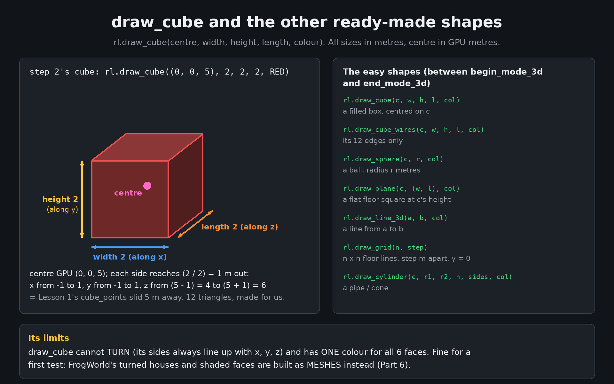
rl.draw_cube((0, 0, 5), 2, 2, 2, RED) is Lesson 1's cube: x and y from −1 to 1, z from 4 to 6 (GPU metres).These are perfect for trying things out. But they have no light: raylib's plain drawing paints every face of a box in the one colour you gave it.
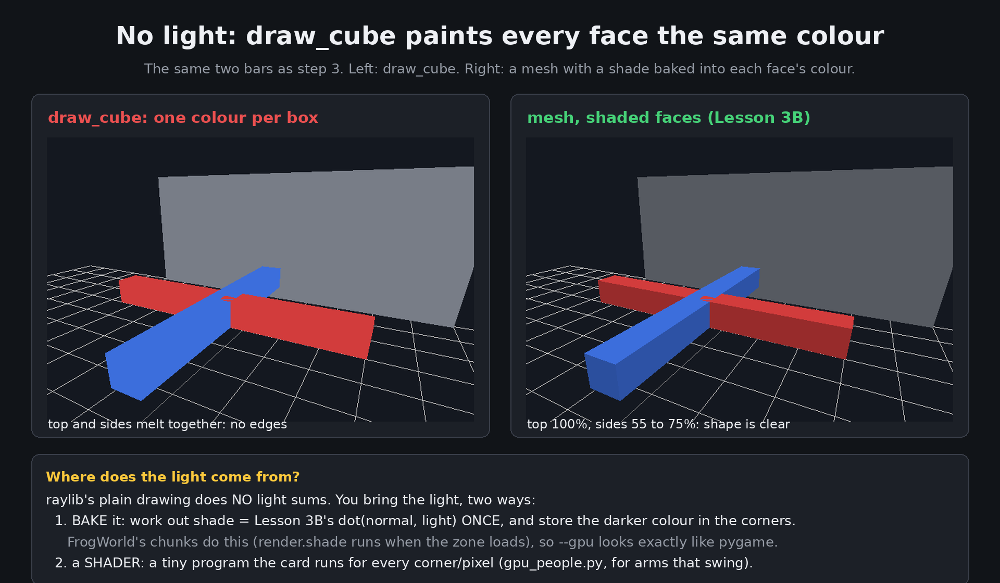
draw_cube. Right: the same bars as a mesh (Part 6) with each face's colour darkened by Lesson 3B's shade.This is why FrogWorld does not use draw_cube for its houses. It works out each face's shade ONCE, when the zone loads (the same render.shade the pygame renderer uses), and stores the darker colour in the face's corners. The card then only has to fill it in, and the picture matches pygame's.
Q7Write the draw_cube line for a 4 m wide, 3 m tall, 6 m long shed standing ON the floor, its centre at WORLD x = 10, z = 20.
Show answer
Standing on the floor means its bottom is at y = 0, so its centre is half its height up: y = (3 / 2) = 1.5. Mirror the x: rl.draw_cube(gpu(10, 1.5, 20), 4, 3, 6, colour), which is GPU centre (−10, 1.5, 20).
Part 5: The depth buffer, for free 8 MIN
In Lesson 10 you built a depth buffer in Python: one "how far away" number for every block of the window, and a face may only paint a block if it is nearer. It was correct, but slow in Python, which is why you used 4 × 4 blocks. The graphics card has one built in, for every single pixel, and begin_mode_3d switches it on.
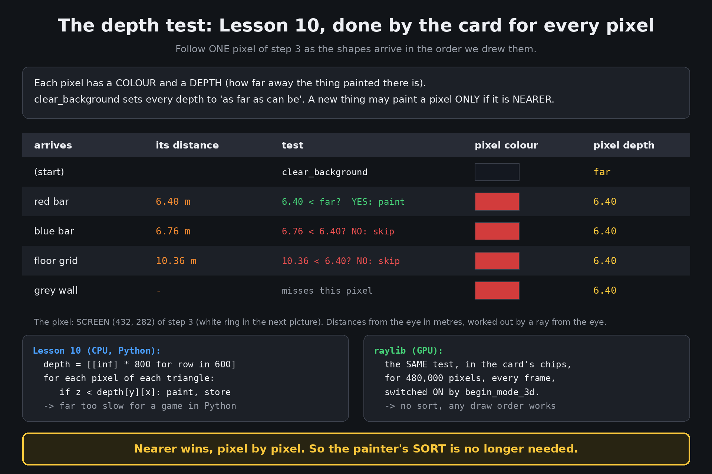
paint a pixel ONLY if (new distance < stored distance)
Lesson 10's rule, run by the card for every pixel of every triangle. Because nearer always wins, the order you draw things in stops mattering, and the painter's sort can go.
step3_depth_buffer.py draws two bars that pass through each other (Lesson 10 showed no painter's order can get these right), then the floor grid, then a wall behind them, in that deliberately bad order. Press D to switch the card's depth test off and see plain painter's drawing again.
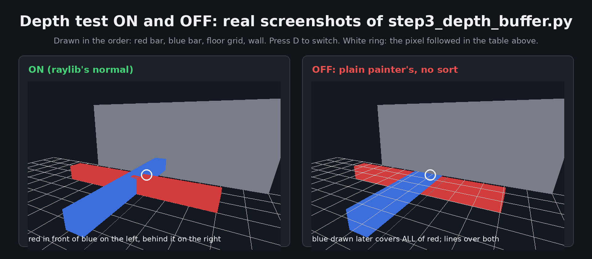
rl.begin_mode_3d(camera) # depth test ON (raylib's normal)
if not depth_on:
rl.rl_draw_render_batch_active() # send what raylib is holding, with the old setting
rl.rl_disable_depth_test() # now: last drawn wins, like the painterTwo lines in that snippet are about raylib holding shapes back and sending them in a bunch (a batch). Part 7 explains batches. For now: if you change a drawing setting in the middle of 3D, flush the batch first, or the shapes already drawn get the new setting too.
One more thing comes free. clear_background wipes the depths as well as the colours: every pixel back to "as far as can be", like Lesson 10's depth = infinity at the start of each frame. Forget it and last frame's distances would hide this frame's moving people.
Q8At pixel (432, 282) the card stores 6.40 after the red bar. If the program drew the blue bar FIRST and the red bar second, what would the pixel end up as?
Show answer
Blue arrives first: 6.76 < far, so paint blue and store 6.76. Red arrives: 6.40 < 6.76, so paint red and store 6.40. Still red: the order does not matter with the depth test on.
Part 6: Meshes: send it once, draw it every frame 10 MIN
draw_cube can't turn and can't shade. For real models we build a mesh: our own list of triangles, which raylib copies into the card's memory. Three ideas make a mesh.
Only triangles
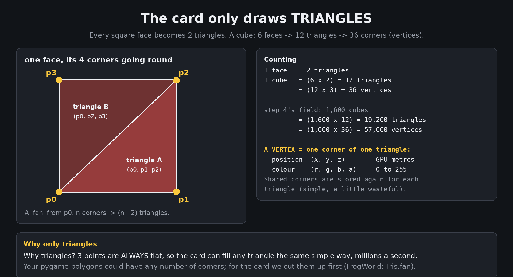
Tris.fan does this for every flat face.Which side is the front?
The card skips any triangle whose back is turned to the camera, as your Lesson 3 clock test did. It decides by the order of the corners: front is where they go round anti-clockwise.
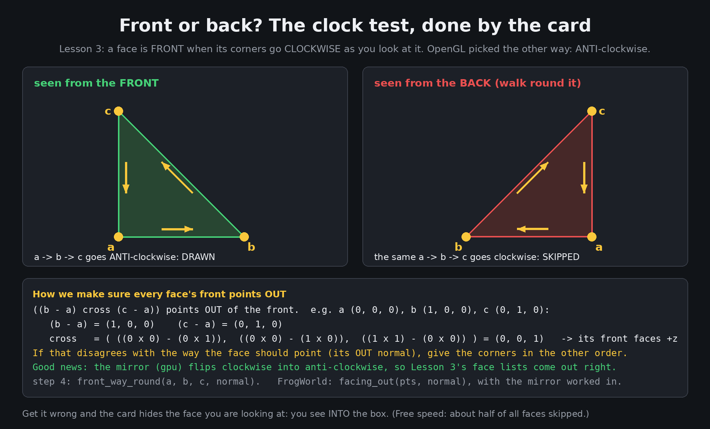
gpu().def front_way_round(a, b, c, normal):
ux, uy, uz = (b[0] - a[0]), (b[1] - a[1]), (b[2] - a[2]) # edge a -> b
vx, vy, vz = (c[0] - a[0]), (c[1] - a[1]), (c[2] - a[2]) # edge a -> c
cx = ((uy * vz) - (uz * vy)) # the cross product:
cy = ((uz * vx) - (ux * vz)) # it points OUT of
cz = ((ux * vy) - (uy * vx)) # the front side
return (((cx * normal[0]) + (cy * normal[1]) + (cz * normal[2])) > 0)Two long lists of numbers
A mesh is just every corner's position and colour, one after another, in two flat lists. numpy keeps each list as one solid block of memory, which is the shape the card wants.
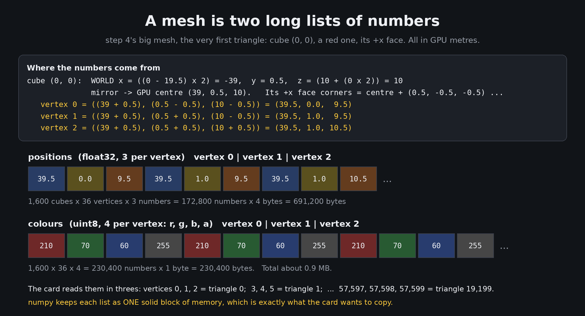
pos_array = np.array(positions, dtype=np.float32) # 172,800 numbers: x, y, z for each vertex
col_array = np.array(colours, dtype=np.uint8) # 230,400 numbers: r, g, b, a for each vertex
big_mesh = rl.ffi.new("Mesh *") # an empty raylib Mesh record
big_mesh.vertexCount = (len(pos_array) // 3) # (172,800 / 3) = 57,600
big_mesh.triangleCount = (big_mesh.vertexCount // 3) # 19,200
big_mesh.vertices = rl.ffi.cast("float *", rl.ffi.from_buffer(pos_array))
big_mesh.colors = rl.ffi.cast("unsigned char *", rl.ffi.from_buffer(col_array))
rl.upload_mesh(big_mesh, False) # copy into the card. False = never changesrl.ffi is the bridge between Python and raylib's C. The two cast lines tell the Mesh record where the numpy lists are in memory. Keep the numpy arrays alive (a module-level name is enough) while the program runs; FrogWorld keeps them in a dictionary called KEEP.
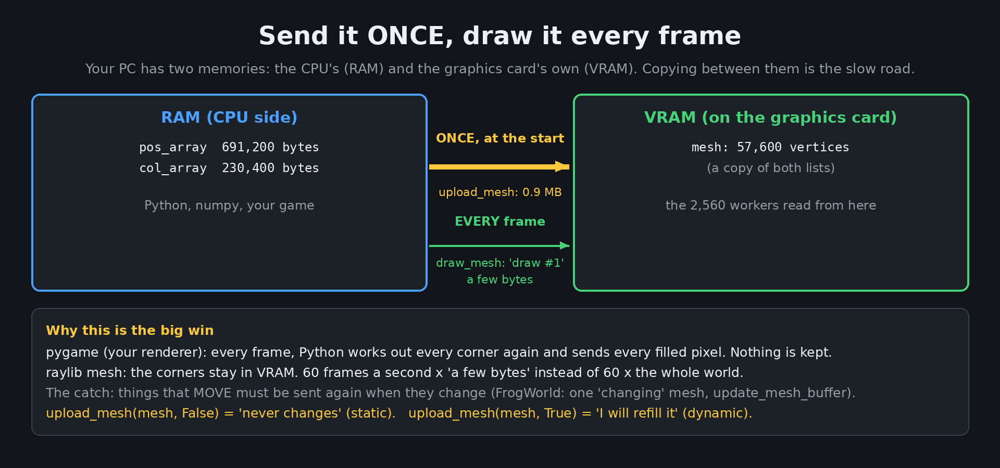
upload once: rl.upload_mesh(mesh, False) every frame: rl.draw_mesh(mesh[0], material, matrix_identity())
Still things (houses, fences, ground) never cross to the card again. This is the main reason FrogWorld --gpu is faster.
Q9A FrogWorld chunk holds 120 still boxes. Every face of every box is kept (none skipped). How many vertices does its mesh have, and how many bytes do its positions take?
Show answer
Per box (6 * 2 * 3) = 36 vertices, so (120 * 36) = 4,320 vertices. Positions: (4,320 * 3) = 12,960 numbers, (12,960 * 4) = 51,840 bytes, about 52 KB. Sent once.
Q10A person walks across the meadow. Can their boxes go in the chunk's still mesh?
Show answer
No: the still mesh is sent once and never changes, so the person would stay where they were baked. Things that move are sent again each frame. FrogWorld puts every mover's boxes in one CHANGING mesh (upload_mesh(mesh, True), refilled with update_mesh_buffer), and people in small part meshes that the card turns (gpu_people.py).
Part 7: Draw calls and speed 6 MIN
A draw call is one "draw this now" order to the card. Each one has a fixed cost, however small the shape, because Python has to call into C and the card has to set itself up. step4_draw_calls.py draws the same field of 1,600 cubes three ways: press 1, 2 or 3.
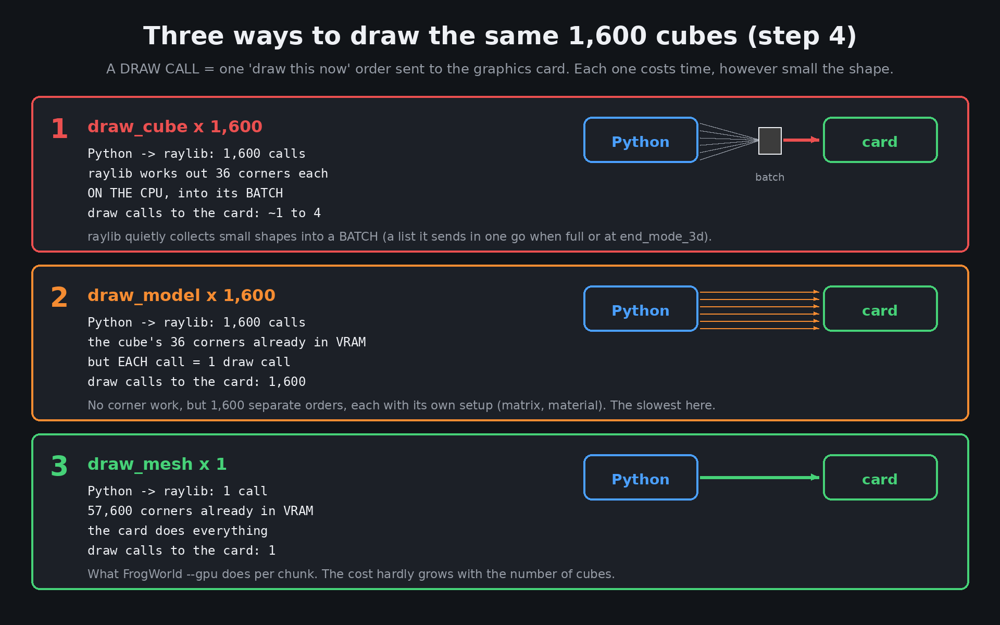
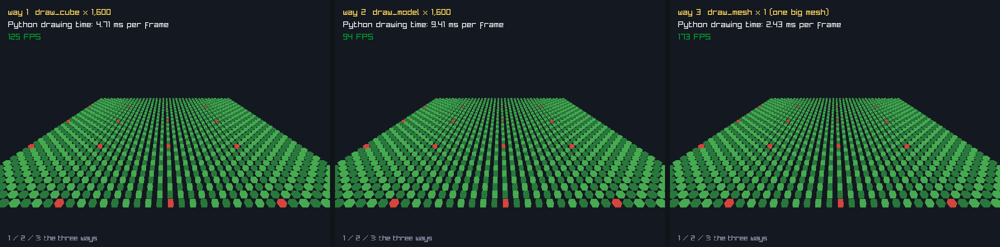
step4_draw_calls.py, ways 1, 2 and 3. The pictures are the same; only the cost differs.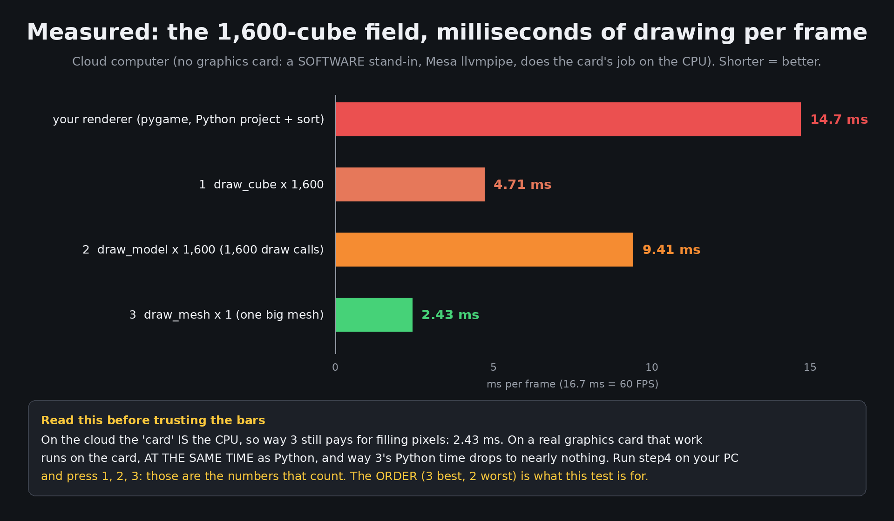
Way 2 is the slowest because it makes 1,600 separate draw calls. Way 3 sends nothing but one order. On the cloud computer even way 3 costs 2.43 ms, because the "card" there is the CPU filling pixels. On a real card that work happens on the card, alongside Python, and way 3's Python time is close to nothing. Please run step4_draw_calls.py on your PC and press 1, 2, 3: those are the numbers that count.
fewer, bigger draw calls = faster
Pack everything that never moves into as few meshes as you can. The number of corners matters much less than the number of calls.
How FrogWorld --gpu puts it all together
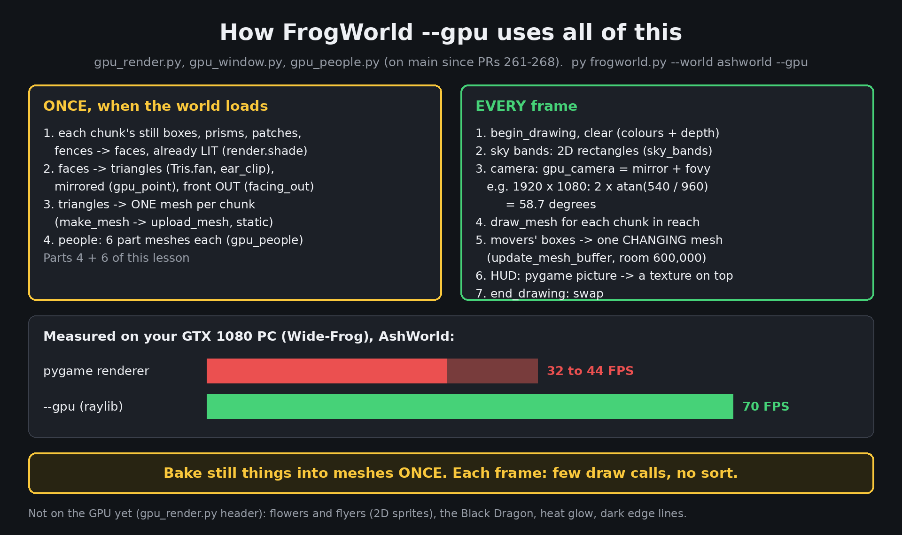
Q11Suppose 100 chunks are in reach. With one mesh per chunk, how many draw calls does the still world need each frame? How many would it need if every box were its own draw_model, at 120 boxes a chunk?
Show answer
One per chunk: about 100 draw calls. One per box: (100 * 120) = 12,000 draw calls, which Part 7's way 2 shows would be far slower even though the picture is identical.
Wrap up 3 MIN
Everything you learnt in the course is still there in raylib. It just has new names, and a new worker.
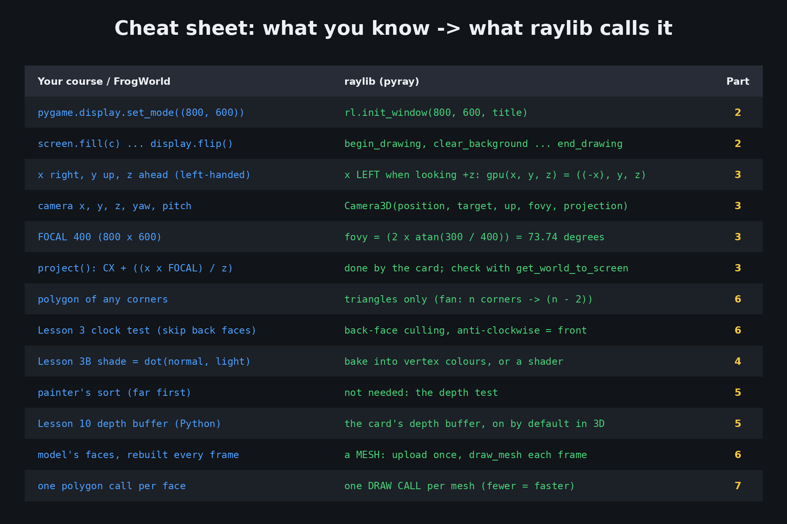
gpu_render.py.- The card does your maths. Turning, projecting, clipping, the clock test, the depth test and filling all run on the graphics card's thousands of workers.
- One minus sign (
gpu()) turns WORLD points into GPU points, for shapes and the camera alike. - fovy = (2 * atan(CENTRE_Y / FOCAL)) gives the same picture as your FOCAL.
- Bake still things into meshes once, with the light already in their colours. Each frame: few draw calls, no sort.
1. py -m pip install raylib 2. run the four programs in order 3. in step 4, press 1, 2 and 3 and note the "Python drawing time" for each. Then try N_SIDE = 80 (6,400 cubes) and see which way grows the most.
Files
Download the code for this lesson (right-click a file and choose Save link as):
code/step1_window.py: a window, a loop, 2D drawing (Part 2)code/step2_camera_cube.py: Camera3D, fovy and Lesson 1's cube, corner 5 checked both ways (Parts 3 and 4)code/step3_depth_buffer.py: the card's depth test, D switches it off (Part 5)code/step4_draw_calls.py: 1,600 cubes drawn three ways, timed (Parts 6 and 7)
The full listings are below. Every picture was made by the scripts in 3d-course/raylib/_build/, and every screenshot is a real raylib run.
Show the whole of step1_window.py (90 lines)
# =====================================================================================
# step1_window.py - raylib lesson, Part 2: a window, a loop, and some 2D drawing
# =====================================================================================
#
# WHAT THIS SHOWS
# The smallest raylib program: open a window, run a loop, wipe the picture, draw a few 2D things, show it.
# It is the raylib copy of the very first pygame program of Lesson 1 (step1_line.py).
#
# HOW TO RUN (Windows, Python 3.14):
# py -m pip install raylib <- once. It gives you the module called "pyray".
# py step1_window.py
# Esc or the window's close button ends it.
#
# THE COORDINATE SYSTEM in this file: SCREEN only.
# SCREEN = pixels from the window's TOP-LEFT corner, x to the right, y DOWN. Exactly the same as pygame.
# (0, 0) is the top-left pixel, (799, 599) the bottom-right one in an 800 x 600 window.
#
# PICTURE: images/r04_loop_side_by_side.png puts this file next to the pygame version, line by line.
import pyray as rl # "pyray" = raylib with Python-style names (init_window, not InitWindow).
# "as rl" so every raylib call starts with rl. and you can see at once which
# lines talk to raylib.
# -------------------------------------------------------------------------------------
# 1. THE WINDOW
# -------------------------------------------------------------------------------------
WIDTH = 800 # pixels across (the same 800 x 600 as every lesson of the 3D course)
HEIGHT = 600 # pixels down
rl.init_window(WIDTH, HEIGHT, "Step 1 - a raylib window")
# pygame needed two lines for this: pygame.init() and screen = pygame.display.set_mode((800, 600))
# raylib does both in one, AND it quietly asks the graphics card for an OpenGL "context": the card's own
# memory for this window (the picture, and later the depth memory of Part 5). You never see that object;
# raylib keeps it inside itself, so there is no "screen" variable to pass around.
rl.set_target_fps(60)
# = pygame's clock.tick(60), but said ONCE here instead of every frame. end_drawing() (below) waits
# for the rest of each 1/60 s = 16.7 ms. Set 0 to run flat out (useful when you measure speed: step 4).
# -------------------------------------------------------------------------------------
# 2. COLOURS
# -------------------------------------------------------------------------------------
# A raylib colour has FOUR numbers: red, green, blue, and ALPHA (how solid: 255 = solid, 0 = invisible).
# pygame mostly used three. A plain Python tuple works anywhere raylib wants a colour.
SKY = (135, 190, 235, 255)
FROG_GREEN = (60, 170, 70, 255)
DARK = (25, 30, 40, 255)
x = 100 # SCREEN x of the moving square's left edge, pixels. It slides right each frame.
# -------------------------------------------------------------------------------------
# 3. THE LOOP
# -------------------------------------------------------------------------------------
# rl.window_should_close() is True once Esc is pressed or the close button clicked.
# pygame needed a "for event in pygame.event.get(): if event.type == pygame.QUIT" loop for that;
# raylib reads the events for you inside end_drawing(), and you just ASK it (rl.is_key_down etc).
while not rl.window_should_close():
# --- move things (no drawing yet) ---
x = (x + 2) # 2 pixels per frame = (2 x 60) = 120 pixels per second
if x > (WIDTH - 100): # off the right edge? start again on the left
x = 0
# --- draw ONE frame ---
rl.begin_drawing()
# "I am starting a new picture." Everything drawn from here goes into the BACK picture: a hidden
# copy that the player cannot see yet (picture r05_frame_steps.png). pygame drew into a hidden copy
# too; you just never had to say "begin".
rl.clear_background(SKY) # = screen.fill(SKY): every pixel of the back picture to SKY
rl.draw_rectangle(x, 250, 100, 100, FROG_GREEN)
# left x, top y, width, height, colour (SCREEN pixels). pygame: pygame.draw.rect(screen, colour, (x, 250, 100, 100))
rl.draw_line(0, 400, WIDTH, 400, DARK) # from (0, 400) to (800, 400): the ground line
rl.draw_circle(650, 120, 40, (250, 220, 80, 255)) # centre (650, 120), radius 40: a sun
rl.draw_text("Hello from raylib", 20, 20, 30, DARK)
# text, left x, top y, size (pixels tall), colour. pygame needed a Font object and a blit for this.
rl.draw_fps(20, 60) # raylib counts the frames per second for you
rl.end_drawing()
# "The picture is finished": the back picture is SWAPPED to the front so the player sees it all at
# once (= pygame.display.flip()). It also waits for the 60 FPS beat and reads the keyboard and mouse.
# -------------------------------------------------------------------------------------
# 4. THE END
# -------------------------------------------------------------------------------------
rl.close_window() # = pygame.quit(): gives the window and the card's memory backShow the whole of step3_depth_buffer.py (96 lines)
# =====================================================================================
# step3_depth_buffer.py - raylib lesson, Part 5: the depth buffer, done by the graphics card
# =====================================================================================
#
# WHAT THIS SHOWS
# Lesson 10's depth buffer (one "how far away" number kept for every pixel), but now the GRAPHICS CARD
# keeps it, for free, and we never sort anything.
# Things are drawn in a deliberately BAD order: red bar, blue bar, floor grid, and the FAR wall LAST.
# * a red bar and a blue bar that pass THROUGH each other (a cross). Lesson 10 showed there is no
# right painter's order for these: each bar is partly in front of the other.
# * the floor grid's lines, drawn AFTER the bars although the bars stand on top of them
# * a grey wall 1 m behind them, drawn last of all
# With the depth test ON : the picture is right anyway (the card compares distances pixel by pixel).
# With the depth test OFF : the card just paints in the order we drew: the blue bar covers ALL of the red
# one, and the floor lines are painted across both bars.
# (The wall never overlaps the bars on screen from up here, so it shows no
# change: it is there to prove the card does not care that we drew it last.)
#
# KEYS
# D depth test on / off
# LEFT / RIGHT walk the camera round the cross (to see the bars pass through each other)
# Esc quit
#
# THE COORDINATE SYSTEMS (as step 2):
# WORLD metres from (0, 0, 0) on the floor, x right, y up, z ahead (the course / FrogWorld)
# GPU (-WORLD x, WORLD y, WORLD z): the mirror, function gpu()
# SCREEN pixels from the window's top-left, y down
import math
import pyray as rl
WIDTH = 800
HEIGHT = 600
FOVY = 73.74 # degrees, = Lesson 1's FOCAL 400 in an 800 x 600 window (step 2 worked it out)
def gpu(x, y, z):
"""WORLD (x, y, z) -> GPU (-x, y, z): the mirror (step 2, picture r06_mirror.png)."""
return ((-x), y, z)
depth_on = True
angle = 0.5 # radians: where the camera stands on its circle round the cross (0 = straight south of it)
rl.init_window(WIDTH, HEIGHT, "Step 3 - the GPU depth buffer")
rl.set_target_fps(60)
while not rl.window_should_close():
if rl.is_key_pressed(rl.KEY_D): # is_key_pressed: True only on the frame the key goes DOWN
depth_on = (not depth_on)
if rl.is_key_down(rl.KEY_RIGHT):
angle = (angle + 0.02)
if rl.is_key_down(rl.KEY_LEFT):
angle = (angle - 0.02)
# The camera walks round a circle, radius 6 m, round the cross's centre WORLD (0, 1, 6), 3.4 m up,
# always looking at that centre.
# e.g. angle 0.5: x = (6 x sin(0.5)) = (6 x 0.479) = 2.88 z = (6 - (6 x cos(0.5))) = (6 - 5.27) = 0.73
eye = ((6 * math.sin(angle)), 3.4, (6 - (6 * math.cos(angle))))
camera = rl.Camera3D(gpu(*eye), gpu(0, 1, 6), (0, 1, 0), FOVY, rl.CAMERA_PERSPECTIVE)
rl.begin_drawing()
rl.clear_background((20, 24, 32, 255))
# clear_background wipes the colours AND the card's depth memory: every pixel's "nearest so far"
# goes back to "as far as can be". (Lesson 10: depth[...] = infinity at the start of every frame.)
rl.begin_mode_3d(camera)
if not depth_on:
rl.rl_draw_render_batch_active() # draw anything raylib is still holding, with the OLD setting
rl.rl_disable_depth_test() # from now on: no distance test, last drawn wins (painter's)
# 1. the red bar: 6 m long along WORLD x, 0.6 m tall, 0.6 m deep, centre WORLD (0, 1, 6)
rl.draw_cube(gpu(0, 1, 6), 6.0, 0.6, 0.6, (210, 60, 60, 255))
# 2. the blue bar: 6 m long along WORLD z, through the SAME centre: the two bars pass through each other
rl.draw_cube(gpu(0, 1, 6), 0.6, 0.6, 6.0, (60, 110, 220, 255))
rl.draw_grid(20, 1.0) # the floor, y = 0
# 3. the grey wall, drawn LAST although it is the FURTHEST thing: 10 m wide, 4 m tall, 1 m behind the
# blue bar's far end (that end is at WORLD z = (6 + 3) = 9; the wall at z = 10)
rl.draw_cube(gpu(0, 2, 10), 10.0, 4.0, 0.2, (120, 125, 135, 255))
if not depth_on:
rl.rl_draw_render_batch_active() # draw the held shapes NOW, while the test is still off
rl.rl_enable_depth_test() # and put it back the way raylib expects
rl.end_mode_3d()
if depth_on:
rl.draw_text("depth test ON: the card keeps the nearest distance per pixel", 20, 20, 20, (120, 230, 140, 255))
else:
rl.draw_text("depth test OFF: last drawn wins (blue over red, lines over both)", 20, 20, 20, (250, 140, 110, 255))
rl.draw_text("D depth on/off LEFT/RIGHT walk round", 20, 570, 18, (140, 150, 170, 255))
rl.end_drawing()
rl.close_window()Show the whole of step4_draw_calls.py (189 lines)
# =====================================================================================
# step4_draw_calls.py - raylib lesson, Parts 6 and 7: meshes, models, and why DRAW CALLS cost time
# =====================================================================================
#
# WHAT THIS SHOWS
# The SAME picture, 1,600 cubes (a 40 x 40 field of them), drawn three different ways. Press 1, 2 or 3:
#
# 1 draw_cube x 1,600 raylib's easy shape call, once per cube, every frame.
# Python -> raylib 1,600 times; raylib works out 36 corners for each, ON THE CPU.
# 2 draw_model x 1,600 ONE cube mesh, sent to the card ONCE at the start. Each frame we say
# "draw that mesh again, here" 1,600 times: 1,600 DRAW CALLS.
# 3 draw_mesh x 1 ALL 1,600 cubes baked into ONE big mesh at the start (57,600 corners),
# sent to the card ONCE. Each frame: ONE call. This is what FrogWorld --gpu does
# with each chunk of the world.
#
# The top line shows how many milliseconds the PYTHON side of the drawing took (the average of the last
# 60 frames) and the FPS. On the cloud computer (no graphics card) we measured, in milliseconds:
# see the lesson page, Part 7. Run it on YOUR PC and compare: that is the real test.
#
# KEYS: 1 / 2 / 3 the three ways Esc quit
#
# THE COORDINATE SYSTEMS:
# WORLD metres from (0, 0, 0) on the floor, x right, y up, z ahead (the course / FrogWorld)
# GPU (-WORLD x, WORLD y, WORLD z): the mirror, function gpu() (step 2, picture r06_mirror.png)
# SCREEN pixels from the window's top-left, y down
import time
import numpy as np
import pyray as rl
WIDTH = 800
HEIGHT = 600
FOVY = 73.74 # degrees (= Lesson 1's FOCAL 400, step 2)
N_SIDE = 40 # cubes along each side: (40 x 40) = 1,600 cubes. Try 80 (6,400) on a fast PC.
GAP = 2.0 # metres from one cube's centre to the next: a 1 m cube, then 1 m of floor
SIZE = 1.0 # metres: each cube is 1 x 1 x 1
def gpu(x, y, z):
"""WORLD (x, y, z) -> GPU (-x, y, z): the mirror."""
return ((-x), y, z)
# -------------------------------------------------------------------------------------
# 1. WHERE THE CUBES ARE, AND THEIR COLOURS (the same for all three ways)
# -------------------------------------------------------------------------------------
# Cube (i, j), i and j from 0 to 39, sits at WORLD x = ((i - 19.5) x 2), z = (10 + (j x 2)), y = 0.5
# (y = half its height, so it stands ON the floor).
# e.g. cube (0, 0): x = ((0 - 19.5) x 2) = -39 z = (10 + 0) = 10 -> WORLD (-39, 0.5, 10)
# cube (39, 39): x = ((39 - 19.5) x 2) = 39 z = (10 + (39 x 2)) = 88 -> WORLD (39, 0.5, 88)
cubes = []
for i in range(N_SIDE):
for j in range(N_SIDE):
x = ((i - ((N_SIDE - 1) / 2)) * GAP)
z = (10 + (j * GAP))
if ((i + j) % 2) == 0: # a chess board of two greens
colour = (70, 170, 80, 255)
else:
colour = (40, 120, 60, 255)
if (i % 10) == 0 and (j % 10) == 0: # and a few red ones, to find your way
colour = (210, 70, 60, 255)
cubes.append(((x, (SIZE / 2), z), colour))
# -------------------------------------------------------------------------------------
# 2. WAY 3's BIG MESH: every cube's 12 triangles in two flat number lists (picture r17_mesh_arrays.png)
# -------------------------------------------------------------------------------------
# A graphics card only draws TRIANGLES. A cube = 6 square faces = (6 x 2) = 12 triangles = (12 x 3) = 36
# corners ("vertices"). Each vertex gets:
# a position 3 numbers, GPU metres: x, y, z
# a colour 4 numbers, 0 to 255: red, green, blue, alpha
# and they all go, one after the other, into two long flat lists:
# positions [x0, y0, z0, x1, y1, z1, x2, y2, z2, ...] (1,600 x 36 x 3) = 172,800 numbers
# colours [r0, g0, b0, a0, r1, g1, b1, a1, ...] (1,600 x 36 x 4) = 230,400 numbers
# The card reads them 3 vertices at a time: vertices 0, 1, 2 are triangle 0; 3, 4, 5 triangle 1; ...
# The 6 faces of a cube centred on (0, 0, 0), half-size h = 0.5, in GPU coordinates.
# Each face: its OUT direction (normal), and its 4 corners going round it.
h = (SIZE / 2)
FACES = [
((1, 0, 0), [(h, -h, -h), (h, h, -h), (h, h, h), (h, -h, h)]), # +x side
((-1, 0, 0), [(-h, -h, -h), (-h, -h, h), (-h, h, h), (-h, h, -h)]), # -x side
((0, 1, 0), [(-h, h, -h), (-h, h, h), (h, h, h), (h, h, -h)]), # top
((0, -1, 0), [(-h, -h, -h), (h, -h, -h), (h, -h, h), (-h, -h, h)]), # bottom
((0, 0, 1), [(-h, -h, h), (h, -h, h), (h, h, h), (-h, h, h)]), # +z side
((0, 0, -1), [(-h, -h, -h), (-h, h, -h), (h, h, -h), (h, -h, -h)]), # -z side
]
def front_way_round(a, b, c, normal):
"""THE CLOCK TEST of Lesson 3, in 3D (picture r16_front_faces.png).
The card only draws a triangle's FRONT: the side from which its corners a -> b -> c go ANTI-clockwise.
The cross product of the two edges (b - a) and (c - a) points OUT of that front side, so:
front faces the way we want when ((b - a) cross (c - a)) . normal > 0
e.g. a = (0, 0, 0), b = (1, 0, 0), c = (0, 1, 0): (b - a) = (1, 0, 0), (c - a) = (0, 1, 0)
cross = ((0 x 0) - (0 x 1), (0 x 0) - (1 x 0), (1 x 1) - (0 x 0)) = (0, 0, 1): its front faces +z."""
ux, uy, uz = (b[0] - a[0]), (b[1] - a[1]), (b[2] - a[2])
vx, vy, vz = (c[0] - a[0]), (c[1] - a[1]), (c[2] - a[2])
cx = ((uy * vz) - (uz * vy))
cy = ((uz * vx) - (ux * vz))
cz = ((ux * vy) - (uy * vx))
return (((cx * normal[0]) + (cy * normal[1]) + (cz * normal[2])) > 0)
# Turn each face into 2 triangles going the right way round, ONCE: (p0, p1, p2) and (p0, p2, p3)
CUBE_TRIANGLES = []
for normal, (p0, p1, p2, p3) in FACES:
if not front_way_round(p0, p1, p2, normal):
p0, p1, p2, p3 = p3, p2, p1, p0 # the other way round
CUBE_TRIANGLES.append((p0, p1, p2))
CUBE_TRIANGLES.append((p0, p2, p3))
# The two long lists, as numpy arrays (numpy makes ONE block of memory the card can copy in one go)
positions = []
colours = []
for (wx, wy, wz), colour in cubes:
cx, cy, cz = gpu(wx, wy, wz) # the cube's centre, GPU metres
for tri in CUBE_TRIANGLES:
for (ox, oy, oz) in tri: # each corner = centre + its offset
positions.extend(((cx + ox), (cy + oy), (cz + oz)))
colours.extend(colour)
pos_array = np.array(positions, dtype=np.float32) # float32 = the 4-byte numbers the card uses
col_array = np.array(colours, dtype=np.uint8) # uint8 = whole numbers 0 to 255, 1 byte each
rl.init_window(WIDTH, HEIGHT, "Step 4 - draw calls")
rl.set_target_fps(0) # 0 = no 60 FPS cap: run flat out, so we can see the real cost
# -------------------------------------------------------------------------------------
# 3. SEND THE BIG MESH TO THE CARD, ONCE (picture r18_upload_once.png)
# -------------------------------------------------------------------------------------
# rl.ffi is the "bridge" between Python and raylib's C code. A Mesh is a C record; we fill in how many
# vertices and triangles, and WHERE in memory the two lists are, then upload_mesh copies them into the
# card's own memory (VRAM). FrogWorld's gpu_render.make_mesh does exactly this.
big_mesh = rl.ffi.new("Mesh *")
big_mesh.vertexCount = (len(pos_array) // 3) # (172,800 / 3) = 57,600 vertices
big_mesh.triangleCount = (big_mesh.vertexCount // 3) # 19,200 triangles
big_mesh.vertices = rl.ffi.cast("float *", rl.ffi.from_buffer(pos_array))
big_mesh.colors = rl.ffi.cast("unsigned char *", rl.ffi.from_buffer(col_array))
rl.upload_mesh(big_mesh, False) # False = "this mesh will never change" (static)
material = rl.load_material_default() # the plain "use the vertex colours" way of filling
no_move = rl.matrix_identity() # "draw it where it is": no turn, no slide
# WAY 2's cube: raylib makes the 36 corners of a 1 m cube for us, and a MODEL wraps mesh + material.
cube_model = rl.load_model_from_mesh(rl.gen_mesh_cube(SIZE, SIZE, SIZE))
# The camera: 25 m up, behind the field, looking at its middle (WORLD (0, 0, 49))
camera = rl.Camera3D(gpu(0, 25, -12), gpu(0, 0, 49), (0, 1, 0), FOVY, rl.CAMERA_PERSPECTIVE)
way = 1
times = [] # the last 60 frames' drawing times, milliseconds
NAMES = {1: "1 draw_cube x 1,600", 2: "2 draw_model x 1,600", 3: "3 draw_mesh x 1 (one big mesh)"}
while not rl.window_should_close():
if rl.is_key_pressed(rl.KEY_ONE):
way, times = 1, []
if rl.is_key_pressed(rl.KEY_TWO):
way, times = 2, []
if rl.is_key_pressed(rl.KEY_THREE):
way, times = 3, []
rl.begin_drawing()
rl.clear_background((20, 24, 32, 255))
rl.begin_mode_3d(camera)
t0 = time.perf_counter()
if way == 1:
for (wx, wy, wz), colour in cubes:
rl.draw_cube(gpu(wx, wy, wz), SIZE, SIZE, SIZE, colour)
elif way == 2:
for (wx, wy, wz), colour in cubes:
rl.draw_model(cube_model, gpu(wx, wy, wz), 1.0, colour)
else:
rl.draw_mesh(big_mesh[0], material, no_move) # big_mesh[0]: "the Mesh itself", not its address
rl.end_mode_3d() # also hands raylib's held-back shapes to the card
ms = ((time.perf_counter() - t0) * 1000)
times.append(ms)
if len(times) > 60:
times.pop(0)
average = (sum(times) / len(times))
rl.draw_text("way " + NAMES[way], 20, 20, 20, (255, 214, 90, 255))
rl.draw_text("Python drawing time: " + str(round(average, 2)) + " ms per frame", 20, 50, 20, (230, 230, 230, 255))
rl.draw_fps(20, 80)
rl.draw_text("1 / 2 / 3: the three ways", 20, 570, 18, (140, 150, 170, 255))
rl.end_drawing()
rl.unload_model(cube_model)
rl.close_window()